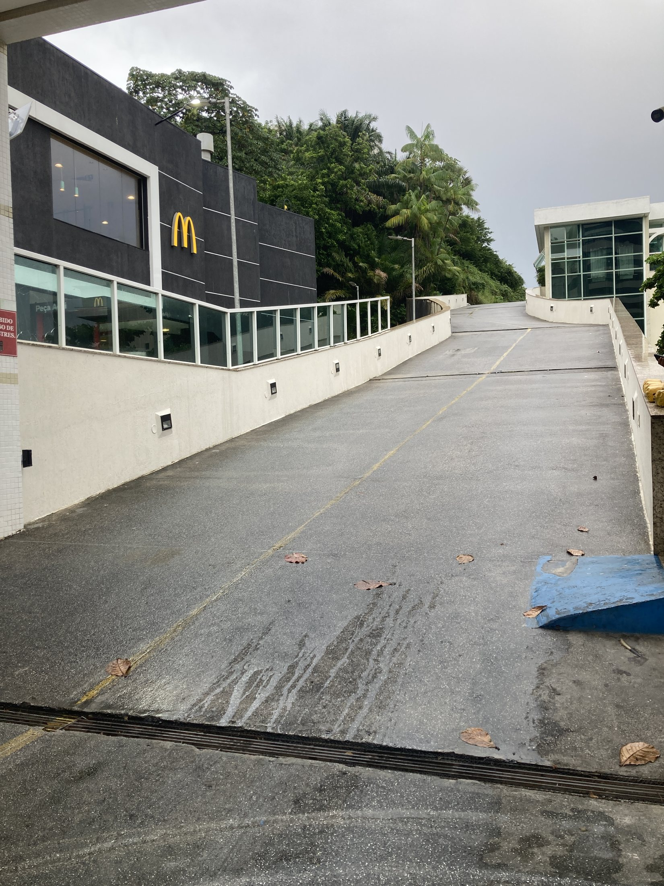

Rampa de acesso
Estudo de qualificação da rampa como parte da chegada, circulação e leitura visual do prédio.

Situação atual da rampa de acesso.
Clique aqui para ver a imagem maior

Proposta visual para tornar o acesso mais claro e acolhedor.
Clique aqui para ver a imagem maior
Rampa de acesso: continuidade visual e sensação de cuidado
A rampa de acesso é um daqueles espaços que muitas vezes passam despercebidos, mas que influenciam profundamente a percepção de organização e qualidade do condomínio. Ela faz parte do percurso diário de moradores, visitantes, prestadores de serviço e entregadores. Por isso, sua leitura visual importa muito.
A proposta aqui não depende de grandes intervenções arquitetônicas. O foco principal está na escolha correta de tonalidade, textura e acabamento.
Uma tinta mal escolhida pode deixar a rampa com aparência industrial, fria ou improvisada. Já uma composição bem pensada consegue transmitir sensação de limpeza, profissionalismo e continuidade estética com o restante do prédio.
A marcação do piso também tem enorme importância. Cor, espessura, alinhamento e contraste precisam ser tratados com cuidado. Quando essas marcações parecem improvisadas ou excessivamente agressivas, o ambiente ganha aparência técnica demais. Quando bem resolvidas, elas comunicam organização e segurança sem poluir visualmente o espaço.
Existe também um ponto conceitual importante: a leitura de continuidade. A estética da rampa não deveria parecer desconectada da portaria. Pelo contrário: idealmente, a sensação visual deveria começar na entrada principal e seguir naturalmente até a área de acesso interno e circulação.
Isso significa trabalhar materiais, iluminação, tonalidades e sinalização como parte de uma linguagem única. Pequenos ajustes de textura, pintura e acabamento podem fazer a rampa deixar de parecer apenas uma área operacional e passar a transmitir uma sensação mais coerente de cuidado e valorização patrimonial.
O objetivo final não é “embelezar uma rampa”, mas melhorar a experiência visual do percurso inteiro do condomínio.